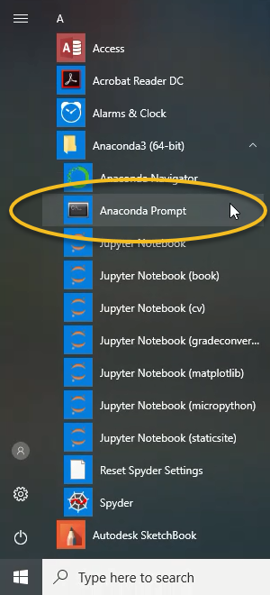

In our Pre-Start Lab you looked at the tips dataset using whatever tools that you were familiar with.
Today we will revisit the tips dataset using pandas while working within a jupyter-lab interface.
Create folder structure to keep your notebooks and dataset organised. Since we will use large datasets over multiple labs, we suggest you organise folders by dataset (not by practical/lab). So you could have folder tree like the following
1 2 3 4 5 6 7 8 9 10 11 12 13 14 15 16 17 18 | |
The above file structure has a number of features that we find useful:
01- etc) is useful to ensure desired sort order in file viewer.data contains the original dataset. For most of our datasets this will be just one or two files, but in general this could be arbitrary complicated.tmp or output to store any intermediate data files that we generate during analysis.1 | |
where
PREFIX is a two-digit, zero-padded prefix to control sort order in file explorer and in jupyter-lab.DATASET is the name of the dataset — this is useful when you have multiple notebooks open across multiple datasets.TASK — the main data mining task that the notebook is focused on.Download the dataset, tips, and place it in your data folder. So following the above suggested structure, place it into folder datasets/01-Tips/data.
jupyter-lab interfaceOn Windows (assuming you have anaconda/miniconda) you:
|
 |
On linux/OS X you:
jupyter-lab and a browser should open showing the jupyter-lab interface.Untitled.ipynb, for your own sanity you should rename this. I tend to follow convention
NUMBER-DATASET_-_TASK.ipynb
(where NUMBER, DATASET, and TASK are replaced by suitable short strings).
1 2 3 4 5 6 | |
1 2 3 | |
Open the following quiz and start answering the questions, using markdown cells to add structure your notebook.
For any students who are not registered on Moodle you will not be able to access the quiz. Instead you can download a PDF with the questions and attempt the quiz offline. Again, we hope to get all students on Moodle by week 2.
See figure below for my starting notebook.

The slides Top X Pandas Commands should be of use for pandas commands.